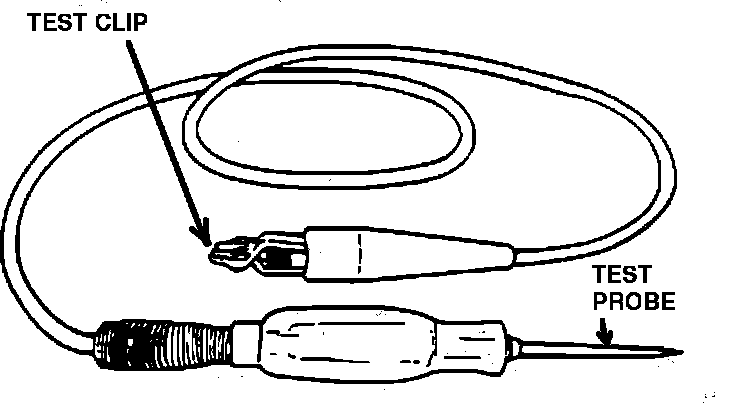

Test-Lights
Non-Powered Test Light:

CIRCUIT POWERED TEST LIGHT
Uses vehicle battery or circuit voltage, to light the test lamp.
Used to check for power or ground.
Before using to test circuit, verify operation. Connect the clip to one battery terminal, and touch the probe to the other battery terminal, test lamp should light.
SELF-POWERED TEST LIGHT
Uses a small internal battery to light the test lamp. Lamp lights when continuity exists between the test probe and the clip.
Used to check circuit continuity, (circuit open or shorted).
Before using to test circuit, verify operation. Connect the clip to the test probe, test lamp should light.
CAUTION: DO NOT connect a self powered test light across a 12 volt circuit. This will burn out the bulb.
NOTE: Both types of test lights are commonly referred to as 12-Volt Test Lights.